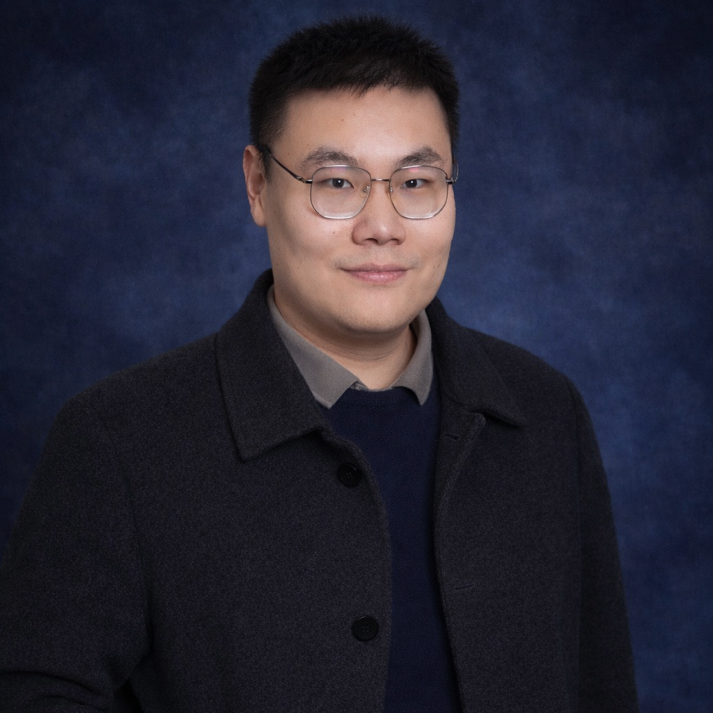

|  | Lecturer (Assistant Professor) [Full CV – Feb 26] [Official Website] [Google Scholar] [ORCID] [ResearchGate] |
Yakun Ju has been an Assistant Professor (UK Lecturer) in the School of Computing and Mathematical Sciences at the University of Leicester (莱斯特大学), United Kingdom, since 2024. Before joining Leicester, he worked as a Research Fellow in the ROSE Lab (博云搜索实验室) at Nanyang Technological University (南洋理工大学), Singapore (2023–2024), collaborating with Prof. [Alex Chichung Kot] (SAEng, IEEE Life Fellow). Prior to that, he was a Postdoctoral Fellow at The Hong Kong Polytechnic University (香港理工大学), Hong Kong SAR (2022–2023), working with Prof. [Kin-Man Lam (林健文)] (Vice President, IEEE Signal Processing Society). He received his Ph.D. in Computer Science from Ocean University of China (中国海洋大学) in 2022, supervised by Prof. [Junyu Dong (董军宇)] (National High-Level Talent Programs - Leading Talents). He received the B.Eng. degree from Sichuan University (四川大学) in 2016.
Dr. Ju’s research interests include 3D reconstruction, photometric stereo, computational imaging, and underwater visual perception. His work emphasizes physically grounded and learning-based methods for dense geometry recovery and reflectance analysis in challenging environments, including underwater and medical scenes. He has authored over 70 peer-reviewed publications in leading journals and conferences such as TPAMI, TVCG, TIP, IJCV, NeurIPS, and CVPR, and holds multiple China national patents related to deep learning-based 3D surface reconstruction, which have supported technology transfer applications exceeding 400,000 CNY (approximately 55,000 USD).
Youth Editorial Board: Machine Intelligence Research (MIR)
Youth Editorial Board: CAAI Transactions on Intelligence Technology (CAAI TRIT)
Associate Editor/Editorial Board: Applied Soft Computing (ASOC)
Associate Editor/Editorial Board: Neurocomputing
Associate Editor/Editorial Board: Intelligent Marine Technology and Systems (IMTS)
Guest Editor: Journal of the Optical Society of America A (JOSA A)-SI:"Optics-Driven Computation Models"
Guest Editor: Ocean Engineering (OE)-SI:"Multimodal 3D Perception for Underwater Engineering"
Guest Editor: Pattern Recognition (PR)-SI:"“Advances in Multimodal-Driven Video Understanding & Assessment"
Guest Editor: Computer Vision and Image understanding (CVIU)-SI: "Computational & Photography Imaging"
Proceedings Chair: British Machine Vision Conference 2026 (BMVC 2026)
Conference Workshop Chair: IEEE ICME 2026W: Physical Principles for Reliable 3D Modelling in Multimedia
Conference Workshop Chair: IEEE ICME 2025W: Multimedia in Underwater Information Processing and Exploration
Revisiting One-stage Deep Uncalibrated Photometric Stereo via Fourier Embedding
Yakun Ju, Boxin Shi, Bihan Wen, Kin-Man Lam, Xudong Jiang, Alex C. Kot
IEEE Transactions on Pattern Analysis and Machine Intelligence (TPAMI), 2025
[Paper]
Deep Learning Methods for Calibrated Photometric Stereo and Beyond
Yakun Ju, Kin-Man Lam, Wuyuan Xie, Huiyu Zhou, Junyu Dong, Boxin Shi
IEEE Transactions on Pattern Analysis and Machine Intelligence (TPAMI), 2024
[Paper]
Photometric regularization for 3D gaussian splatting in multi-view surface projection
Yakun Ju,Yuying Zhao, Jun Xiao, Cong Zhang, Zheheng Jiang, Huiyu Zhou, Wei Zhou, Hui Yu, Junyu Dong
IEEE Journal of Selected Topics in Signal Processing (JSTSP), 2025
[Paper]
Normattention-PSN: A High-Frequency Region Enhanced Photometric Stereo Network with Normalized Attention
Yakun Ju, Boxin Shi, Muwei Jian, Lin Qi, Junyu Dong, Kin-Man Lam
International Journal of Computer Vision (IJCV), 2022
[Paper]
Recovering Surface Normal and Arbitrary Images: A Dual Regression Network for Photometric Stereo
Yakun Ju, Junyu Dong, Sheng Chen
IEEE Transactions on Image Processing (TIP), 2021
[Paper]
GR-PSN: Learning to Estimate Surface Normal and Reconstruct Photometric Stereo Images
Yakun Ju, Boxin Shi, Yang Chen, Huiyu Zhou, Junyu Dong, Kin-Man Lam
IEEE Transactions on Visualization and Computer Graphics (TVCG), 2023
[Paper]
Estimating Highresolution Surface Normals via Low-resolution Photometric Stereo Images
Yakun Ju, Muwei Jian, Cong Wang, Cong Zhang, Junyu Dong, Kin-Man Lam
IEEE Transactions on Circuits and Systems for Video Technology (TCSVT), 2023 (ESI Highly Cited Paper)
[Paper]
Underwater Surface Normal Reconstruction via Cross-grained Photometric Stereo Transformer
Yakun Ju, Ling Li, Xian Zhong, Yuan Rao, Yanru Liu, Junyu Dong, Alex C. Kot
IEEE Journal of Oceanic Engineering (JOE), 2024
[Paper]
Towards Marine Snow Removal with Fusing Fourier Information
Yakun Ju, Jun Xiao, Cong Zhang, Hao Xie, Anwei Luo, Huiyu Zhou, Alex C. Kot
Information Fusion (INFFUS), 2024
[Paper]
Learning Conditional Photometric Stereo with High-resolution Features
Yakun Ju, Yuxin Peng, Muwei Jian, Feng Gao, Junyu Dong
Computational Visual Media (CVMJ), 2022
[Paper]
A dual-cue network for multispectral photometric stereo
Yakun Ju, Xinghui Dong, Yingyu Wang, Lin Qi, Junyu Dong
Pattern Recognition (PR), 2020
[Paper]
Learning Conditional Photometric Stereo with High-resolution Features
Yakun Ju, Kin-Man Lam, Yang Chen, Lin Qi, Junyu Dong
International Conference on International Joint Conferences on Artificial Intelligence (IJCAI), 2020
[Paper]
FNIN: A Fourier Neural Operator-based Numerical Integration Network for Surface-from-gradients
Jiaqi Leng, Yakun Ju*, Yuanxu Duan, JiangnanZhang, Qingxuan Lv, Zuxuan Wu, Hao Fan
Annual AAAI Conference on Artificial Intelligence (AAAI), 2025
[Paper]
A deep-shallow and global–local multi-feature fusion network for photometric stereo
Yanru Liu, Yakun Ju*, Muwei Jian, Feng Gao, Yuan Rao, Yeqi Hu, Junyu Dong
Image and Vision Computing (IVC), 2022
[Paper]
A Structure-Affinity Dual Attention-based Network to Segment Spine for Scoliosis Assessment
Hao Xie, Zixun Huang, Frank H.F. Leung, Yakun Ju*, Yong-Ping Zheng, Sai Ho Ling
IEEE International Conference on Bioinformatics and Biomedicine (BIBM), 2023
[Paper]
Learning General Descriptors for Image Matching with Regression Feedback
Yuan Rao, Yakun Ju, Cong Li, Eric Rigall, Jian Yang, Hao Fan, Junyu Dong
IEEE Transactions on Circuits and Systems for Video Technology (TCSVT), 2023
[Paper]
3D Hand Pose Estimation from Monocular RGB with Feature Interaction Module
Shaoxiang Guo, Eric Rigall, Yakun Ju, Junyu Dong
IEEE Transactions on Circuits and Systems for Video Technology (TCSVT), 2022
[Paper]
Efficient Inductive Vision Transformer for Oriented Object Detection in Remote Sensing Imagery
Cong Zhang, Jingran Su, Yakun Ju, Kin-Man Lam, Qi Wang
IEEE Transactions on Geoscience and Remote Sensing (TGRS), 2023 (ESI Highly Cited Paper)
[Paper]
Dynamic Mutual Learning for Object Detection in Aerial Imagery
Cong Zhang, Chuang Yang, Yakun Ju, Jun Xiao, Muwei Jian, Kin-Man Lam, Qi Wang
IEEE Transactions on Geoscience and Remote Sensing (TGRS), 2026
[Paper]
DA-GAN: Dual-Attention GAN for Underwater Image Enhancement With Contrast and Color Correction
Xiaopng Liu, Honghao Xu, Yakun Ju, Shengke Wang, Cong Liu, Long Chen
IEEE Transactions on Geoscience and Remote Sensing (TGRS), 2026
[Paper]
pmBQA: Projection-based Blind Point Cloud Quality Assessment via Multimodal Learning
Wuyuan Xie, Kaimin Wang, Yakun Ju, Miaohui Wang
ACM International Conference on Multimedia (MM), 2023
[Paper]
DCD-UIE: Decoupled Chromatic Diffusion Model for Underwater Image Enhancement
Guodong Fan, Yu Zhou, Jingchun Zhou, Yakun Ju, Guang-Yong Chen, Jinjiang Li, Alex C. Kot
IEEE Transactions on Image Processing (TIP), 2026
[Paper]
Flow-Edge-Net: Video Saliency Detection Based on Optical Flow and Edge-Weighted Balance Loss
Muwei Jian, Xiangwei Lu, Xiaoyang Yu, Yakun Ju, Hui Yu, Kin-Man Lam
IEEE Transactions on Computational Social Systems (TCSS), 2023
[Paper]
Prototype-driven structure synergy network for remote sensing images segmentation
Junyi Wang, Jinjiang Li, Guodong Fan, Yakun Ju, Xiang Fang, Alex C. Kot
EEE Transactions on Geoscience and Remote Sensing (TRGS), 2025
[Paper]
Towards Progressive Multi-Frequency Representation for Image Warping
Jun Xiao, Zihang Lyu, Cong Zhang, Yakun Ju, Changjian Shui, Kin-Man Lam
IEEE Conference on Computer Vision and Pattern Recognition (CVPR), 2024
[Paper]
Cross-Frequency Attention and Color Contrast Constraint for Remote Sensing Dehazing
Yuxin Feng, Jufeng Li, Tao Huang, Fangfang Wu, Yakun Ju, Chunxu Li, Weisheng Dong, Alex C. Kot
IEEE Transactions on Image Processing (TIP), 2026
[Paper]
Exposing Image Splicing Traces in Scientific Publications via Uncertainty-guided Refinement
Xun Lin, Wenzhong Tang, Haoran Wang, Yizhong Liu, Yakun Ju, Shuai Wang, Zitong Yu
Patterns - Cell Press, 2024
[Paper]
Promptrestorer: A prompting image restoration method with degradation perception
Cong Wang, Jinshan Pan, Wei Wang, Jiangxin Dong, Mengzhu Wang, Yakun Ju, Junyang Chen
Advances in Neural Information Processing Systems (NeurIPS), 2023
[Paper]
ACM China Council Qingdao Chapter Outstanding Doctoral Dissertation Award, 2022
National Scholarship for Doctoral Students, 2020
Outstanding Graduates of Shandong Province, 2022
Inspur Scholarship, 2021
Goers Acoustic Scholarship, 2017
A Single Frame Image 3D Reconstruction Device and Method Based on Deep Learning, CN107862741A, Yakun Ju, Junyu Dong, Lin Qi, Liang Lu
High-frequency Region Enhancement Photometric Stereo Method Based on Deep Learning, CN110060212A, Yakun Ju, Junyu Dong, Feng Gao
Multispectral photometric stereo surface normal recovery method based on deep learning, CN113936117A, Yakun Ju, Junyu Dong, Lin Qi
A Transformer-based face image super-resolution method, CN113191953A, Muwei Jian, Rui Wang, Xing Wang, Yakun Ju, etc.
A method for grading diabetic retinopathy based on a three-stage attention network, CN115587979A, Muwei Jian, Hongyu Chen, Rui Wang, Yakun Ju, etc.
Low-resolution face super-resolution and recognition method based on facial prior knowledge, CN113128467A, Muwei Jian, Rui Wang, Xing Wang, Ji Chen, Yakun Ju, etc.
Mixed facial component recognition method based on non-uniform illumination face image enhancement, CN113239823A, Muwei Jian, Rui Wang, Xing Wang, Chengdong Li, Yakun Ju, etc.